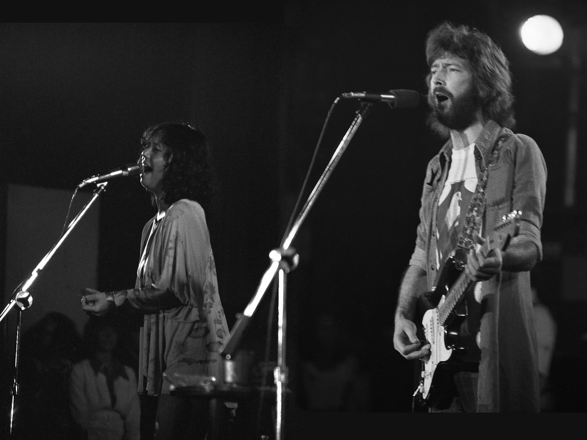
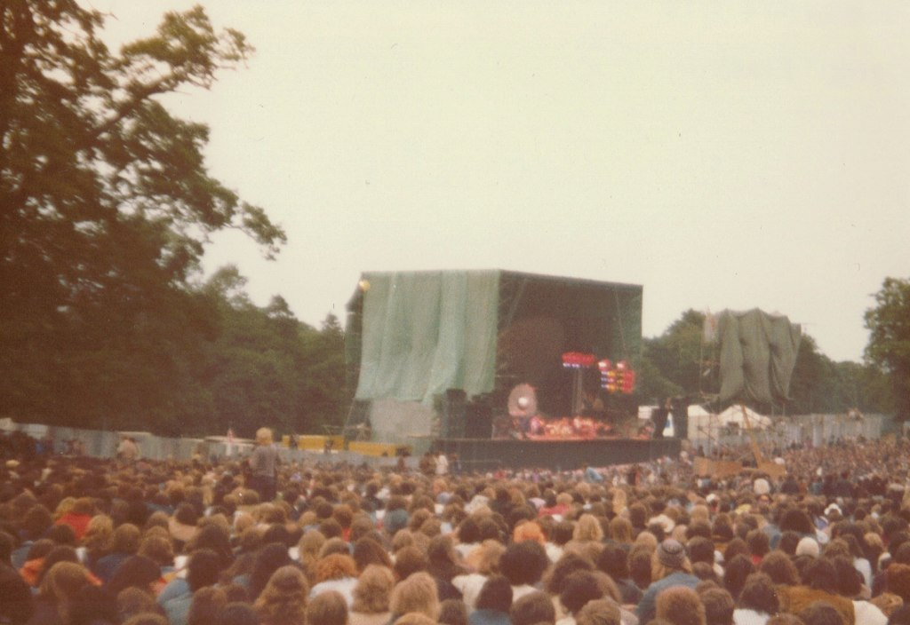
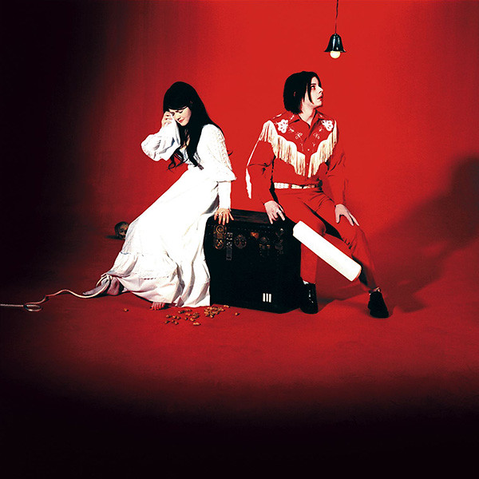
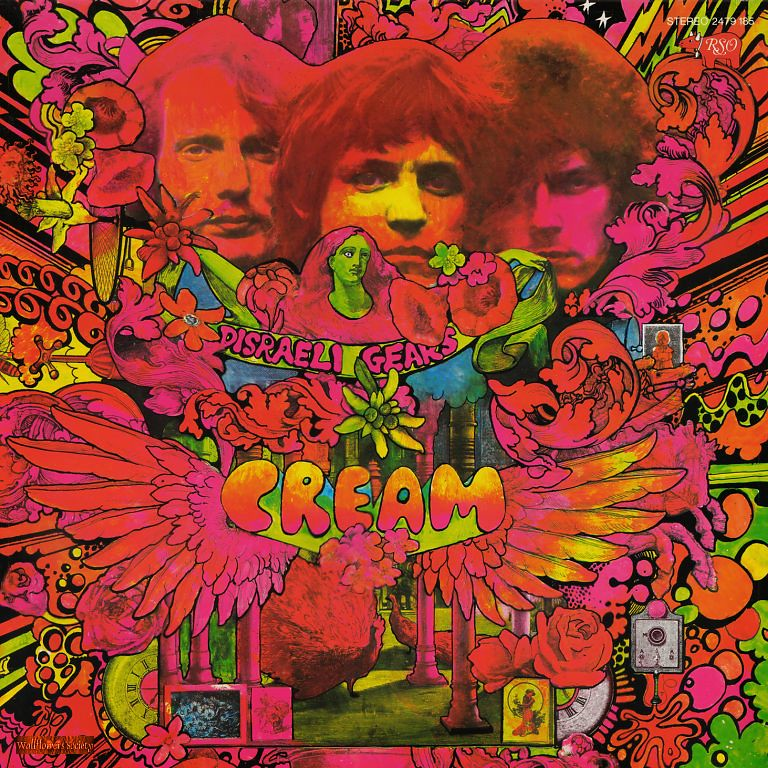

Un violento scroscio di pioggia , il cuore di una tempesta acocmpagna le note di questo brano. Tempesta, metafora dell'esistenza e noi, cavalieri. In un mondo in cui "siamo stati gettati", in cui siamo soli e artefici del nostro destino c'è ancora spazio per l'amore. "Girl, you gotta love your man".
Note da bere in compagnia di un Black Manhattan
Titolo: Cocaine
Autore: Eric Clapton
Album: Slowhand
Anno: 1977
Accordi potenti, un assolo di chitarra squillante e un ritmo travolgente e grintoso, questa è Cocaine, dal testo che parla della tossicodipendenza, qualcosa che lo stesso cantante conosceva bene. Note da Bere in compagnia di una Gouden Carolus Van De Keizer, arricchita con un infuso di whisky Gouden Carlos Single Malt, particolare ed intensa


Titolo: Comfortably Numb
Autore: Pink Floyd
Album: The Wall
Anno: 1979
Chiudete gli occhi e fatevi trasportare da ogni singola nota di questa canzone dal testo indescrivibile. Un coro dai toni leggeri prende la scena per poi lasciare spazio all’assolo di chitarra preferito di tutti i tempi. Note da Bere con una Malheur Dark Brut, scura e dai profumi variegati.
Titolo: Scar Tissue
Autore: Red hot chili peppers
Album: Californication
Anno: 1999
Tratta dall'album forse più celebre red hot "Californication", Scar tissue è un tributo alla solitudine e al tempo stesso in maniera quasi contraddittoria al bisogno
di avere qualcuno al proprio fianco. La solitudine non è mai, in fin dei conti, totale. Anche e soprattutto nei momenti di difficoltà desideriamo essere accolti anche con le nostre ferite,
essere capiti senza troppe spiegazioni. Note da bere in compagnia di un intramontabile Old fashioned.
Ingredienti: Bourbon whiskey, 1 zolletta di zucchero, 2 gocce di Angostura e soda.

Titolo: Jolene
Autore: The White Stripes
Album: Hello Operator
Anno: 2004
Piena di rabbia e amore dal cuore ardente. Durante l'esibizione, la band usa tutta la mente, l'anima e il corpo per raccontare la storia di "Jolene".
La canzone narra di una donna che affronta Jolene, una stupenda ragazza. La donna crede che la ragazza stia tentando di sottrarle il suo uomo e la prega di non portarglielo via. Note da Bere con Fantome Magic ghost, dai sapori agrumati, un po' acidula e leggermente amara nel finale,
Titolo: White Room
Autore: Cream
Album: Wheels of Fire
Anno: 1968
Una canzone assolutamente ammaliante, considerata un grande capolavoro ove la voce dell’artista e la sua chitarra circondano tutta la canzone di un’atmosfera unica.
La stanza bianca è vista come un rifugio sicuro rispetto all’oscurità del mondo e l’artista si sente protetto e aspetta. Note da bere con Red Ale Belga, dal sapore forte e con sentori di frutta.

Titolo: Behind Blue eyes
Autore: The Who
Album: Who's Next
Anno: 1971
La canzone inizia con dei fantastici accordi di chitarra acustica, morbida e melodica ma anche dura e calciante. La voce di Roger è semplicemente sia inquietante che potente! Note da bere con Achel Blonde , dal gusto fresco e corposo e speziato.